| Pentagram | Objects: every graphic |
Every one of the 172 graphic numbers. An object's graphic, the first byte of its record, is all it is: it picks the sprite it is drawn with, through GRAPHICS, and the update routine the main loop runs for it every turn, through UPDATES. There is no separate frame number: a thing animates, or turns into something else, by changing its own graphic -- a walking frame, a puff's next frame, a stone finished by the bucket.
They are grouped here by what their routines do. Each line gives the sprite (click it for the sprite, or the address for its entry in the listing), the routine and a line on what it does, and where the graphic comes from: the scenery and object templates that name it, the quest's records, the tables the panel, the border and the sky are drawn from, and the routines that give it to an object. Knight Lore has the same two tables, by object type (see Knight Lore's objects).
Graphic 0 is an empty record and 1 one about to be emptied; neither is drawn. Graphic numbers run to 171, and 40 of them are never placed.
Graphics 0 and 1 -- The player -- Bolts and puffs -- Doorways -- Walls and still things -- Things that kill where they stand -- Blocks that fall and can be pushed -- Blocks that move -- Creatures -- Things from the sky -- The quest -- The panel and the border -- Graphics nothing places
Not things: 0 is an empty record, which the main loop still runs (a RET) and nothing draws, and 1 an object on its way out -- what is picked up, a puff at its end, a crumbled block -- which the drawing code empties instead of drawing (DRAW_OBJECT).
| Graphic | Sprite | What it shows | Update routine | Where it comes from |
|---|---|---|---|---|
| 0 | $9395 | nothing: width and height zero | NOTHING: nothing | nothing places it |
| 1 | an object on its way out: rubbed out and emptied when next drawn (DRAW_OBJECT) |
He is two records, legs and body (OBJECTS). The legs' routine does his whole turn -- controls, turning, walking, jumping, picking up, the move and firing -- and its graphic says which way he faces and his walking frame; the body follows the legs, its graphic theirs plus 8, and keeps out of the collisions.
| Graphic | Sprite | What it shows | Update routine | Where it comes from |
|---|---|---|---|---|
| 32 | $98A5 | his legs | PLAYER_LEGS: his whole turn: controls, turning, walking, jumping, taking, moving, firing | his legs: the facing and the walking frame (PLAYER_LEGS) |
| 33 | $9849 | |||
| 34 | $97ED | |||
| 35 | $9849 | |||
| 36 | 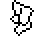 $996F | his legs, the other view | ||
| 37 | 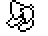 $9901 | |||
| 38 | 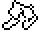 $99DD | |||
| 39 | $9901 | |||
| 40 | 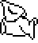 $94DF | his body | PLAYER_TOP: follows the legs, 12 or 8 above them | his body: the legs' graphic plus 8 (PLAYER_TOP) |
| 41 | 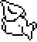 $943B | |||
| 42 | 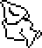 $9397 | |||
| 43 | $943B | |||
| 44 | 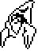 $9651 | his body, the other view | ||
| 45 | 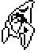 $9583 | |||
| 46 | 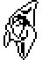 $971F | |||
| 47 | $9583 |
A bolt flies level at 8 units a turn and shoots down what fell from the sky; stopped by anything else it goes up in a puff. A puff is also what he, the bucket and a shot-down flyer become: a frame a turn, then gone.
| Graphic | Sprite | What it shows | Update routine | Where it comes from |
|---|---|---|---|---|
| 64 | $813B | a puff of smoke | PUFF: the next frame, with a burst of noise | the first frame of a puff (START_PUFF) |
| 65 | $8175 | a puff's later frames (PUFF) | ||
| 66 | $81C5 | |||
| 67 | $8175 | |||
| 68 | $81C5 | |||
| 69 | ||||
| 70 | 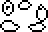 $822D | a puff breaking up | ||
| 71 | END_PUFF: vanishes | |||
| 149 | 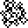 $828F | a bolt | BOLT: flies, shoots down flyers, puffs when stopped | a bolt in flight: the frames go 151, 150, 149 (BOLT) |
| 150 | 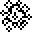 $82D1 | a bolt, as it is fired (FIRE) | ||
| 151 | 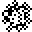 $8313 | a bolt in flight: the frames go 151, 150, 149 (BOLT) |
Each doorway is two pillars: the first works out where the doorway is and sends him through it, the second only draws.
| Graphic | Sprite | What it shows | Update routine | Where it comes from |
|---|---|---|---|---|
| 6 | 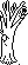 $9C63 | a tree: the first pillar of a doorway in the trees | FIRST_PILLAR: the doorway: steers him to its middle and sends him through | scenery 0, 1, 2, 3 |
| 7 | 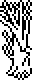 $9DAF | a tree: the second pillar of a doorway in the trees | SECOND_PILLAR: sets its drawing nudge | |
| 8 | 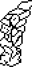 $A557 | the first half of a stone arch | FIRST_PILLAR: the doorway: steers him to its middle and sends him through | scenery 4, 5, 6, 7, 24, 25, 26, 27 |
| 9 | 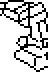 $A47D | the second half of a stone arch | SECOND_PILLAR: sets its drawing nudge |
A still thing's whole update routine is to set the nudge that lines its sprite up with its position (+$12 and +$13); nothing else about it changes, so it is never redrawn unless something passes in front of it.
| Graphic | Sprite | What it shows | Update routine | Where it comes from |
|---|---|---|---|---|
| 10 | 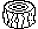 $9E51 | a tree stump | JUMP_L16_D8: sets its drawing nudge | object template 1 (15 rooms) |
| 11 | 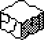 $88BD | a stone block | scenery 28, 29, 30, 31; object template 0 (30 rooms) | |
| 12 |  $9F1B | a tree in a line of trees | DRAW_AT_L8_D2: sets its drawing nudge | scenery 8, 9, 10, 11, 16, 17 |
| 13 |  $9FC9 | |||
| 14 |  $A09F | |||
| 15 | $A175 | |||
| 52 |  $A327 | a column in a stone wall | scenery 12, 13, 15, 20, 21 (no room) | |
| 53 |  $A2A9 | a piece of ruined stone wall | DRAW_AT_L8_D4: sets its drawing nudge | scenery 12, 13, 14, 15, 20, 21 (no room) |
| 54 | $A23F | |||
| 55 |  $A3AD | |||
| 56 |  $A40F | scenery 12, 13, 14 | ||
| 57 |  $A67F | the end of a stone wall | DRAW_AT_L8: sets its drawing nudge | scenery 12, 13, 14, 15, 20, 21 (no room) |
| 76 | $9E51 | a tree stump | JUMP_L16_D8: sets its drawing nudge | object template 8 (2 rooms) |
| 82 | $8609 | a smooth block | object template 23 (2 rooms) |
Deadly both ways (MAKE_DEADLY): whatever touches them dies. The spikes can also be pushed and fall.
| Graphic | Sprite | What it shows | Update routine | Where it comes from |
|---|---|---|---|---|
| 23 | 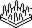 $8795 | a bed of spikes | STILL_DEADLY: deadly both ways; never moves | object template 3 (35 rooms) |
| 28 | SPIKES: deadly both ways; falls and can be pushed | object template 14 (7 rooms) | ||
| 30 | 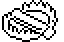 $86EB | a toothed trap | STILL_DEADLY: deadly both ways; never moves | object template 5 (28 rooms) |
| 74 | 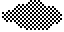 $73BF | a dark patch on the ground | object template 13 (4 rooms) | |
| 75 | 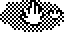 $7441 | a hand reaching out of a dark patch | object template 21 (11 rooms) |
They fall a unit a turn, and walking into one pushes it (the collision code gives it the pusher's step) -- except the heavy block, which throws its pushes away.
| Graphic | Sprite | What it shows | Update routine | Where it comes from |
|---|---|---|---|---|
| 63 | $8609 | a smooth block | PUSHABLE: falls, and moves when pushed | object template 6 (2 rooms) |
| 72 | $9E51 | a tree stump | object template 4 (17 rooms) | |
| 73 | 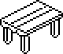 $8ABD | a table | SLIDING_TABLE, in HEAVY_BLOCK: falls, and moves when pushed | object template 7 (4 rooms) |
| 79 | $88BD | a stone block | PUSHABLE: falls, and moves when pushed | object template 11 (4 rooms) |
| 91 | HEAVY_BLOCK: falls; pushes have no effect | object template 9 (3 rooms), 22 (no room) |
Stone blocks that do something when he stands on them, or that move by themselves and carry him: the collision code gives him, standing on a thing, its step when he has none of his own (ADJ_DZ_FOR_OBJ_INTERSECT).
| Graphic | Sprite | What it shows | Update routine | Where it comes from |
|---|---|---|---|---|
| 78 | $88BD | a stone block | SINKING_BLOCK: sinks a unit a turn while stood on | object template 10 (6 rooms) |
| 84 | LIFT: rises to 176 carrying him, then sinks back | object template 12 (7 rooms) | ||
| 85 | BOBBER: falls, then rises to 176, over and over | nothing places it | ||
| 87 | PACER_U, in DEADLY_PACER_U: paces along U, 2 a turn, turning at a bump | object template 16 (12 rooms) | ||
| 88 | PACER_V, in DEADLY_PACER_V: paces along V, 2 a turn, turning at a bump | object template 17 (5 rooms) | ||
| 136 | CRUMBLING_BLOCK: crumbles a stage a turn while stood on | object template 24 (18 rooms) | ||
| 137 | 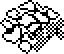 $74C3 | the stone block crumbling, first stage | the crumbling block's stages (CRUMBLING_BLOCK) | |
| 138 | 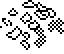 $759D | the stone block crumbling, second stage | ||
| 139 | 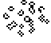 $7677 | the stone block crumbling, last stage | ||
| 140 | $88BD | a stone block | CONVEYOR_PLUS_U: carries what stands on it forwards in U | object template 25 (2 rooms) |
| 141 | CONVEYOR_MINUS_U: carries what stands on it backwards in U | object template 26 (no room) | ||
| 142 | CONVEYOR_PLUS_V: carries what stands on it forwards in V | object template 27 (3 rooms) | ||
| 143 | CONVEYOR_MINUS_V: carries what stands on it backwards in V | object template 28 (1 room) |
Deadly both ways (MAKE_DEADLY). The heads move as the blocks do, pacing or bobbing; the spiders run about.
| Graphic | Sprite | What it shows | Update routine | Where it comes from |
|---|---|---|---|---|
| 16 | 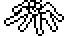 $84AD | a spider | ROAMER: deadly; runs straight, turns at a bump | object template 20 (8 rooms) |
| 17 | the spider's other frame, every other turn (ROAMER) | |||
| 86 | 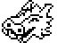 $7751 | a horned head | DEADLY_BOBBER: deadly; falls, then rises to 176, over and over | object template 15 (8 rooms) |
| 89 | $84AD | a spider | SPIDER: deadly; scuttles diagonally at random | object template 18 (16 rooms) |
| 92 | $7751 | a horned head | DEADLY_PACER_U: deadly; paces along U, turning at a bump | object template 29 (7 rooms) |
| 93 | DEADLY_PACER_V: deadly; paces along V, turning at a bump | object template 30 (5 rooms) |
What SKY_DROP drops into a room from a height of 216, one of the eight graphics at DROP_GRAPHICS at random. Homers fly at him and bounce off what they hit, and their routine sets no kill bits; the witch and the walker run straight, turn when they bump into something, and are deadly both ways (MAKE_DEADLY). A bolt that touches any of them shoots it down, for points from its graphic number (SHOOT_DOWN).
| Graphic | Sprite | What it shows | Update routine | Where it comes from |
|---|---|---|---|---|
| 48 | $7FFF | a ghost | HOMER: flies at him, bouncing off what it hits | object template 2 (no room); falls from the sky (DROP_GRAPHICS, 2 of its 8) |
| 49 | 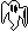 $809D | a homer's other frames: the low two bits of the graphic (HOMER) | ||
| 50 | $7FFF | |||
| 51 | $809D | |||
| 80 | 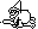 $7A9D | a witch on a broomstick | SKY_ROAMER, in ROAMER: deadly; runs straight, turns at a bump | falls from the sky (DROP_GRAPHICS, 2 of its 8) |
| 81 | 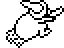 $7B5F | a witch on a broomstick, from behind | the witch's other view (ROAMER) | |
| 160 | 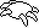 $7DD1 | a clawed, winged beast | HOMER: flies at him, bouncing off what it hits | falls from the sky (DROP_GRAPHICS, 2 of its 8) |
| 161 | 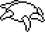 $7E8B | a homer's other frames: the low two bits of the graphic (HOMER) | ||
| 162 | $7DD1 | |||
| 163 | 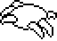 $7F45 | |||
| 164 | 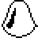 $7CA1 | a pointed blob | falls from the sky (DROP_GRAPHICS, 1 of its 8) | |
| 165 | 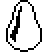 $7D33 | a homer's other frames: the low two bits of the graphic (HOMER) | ||
| 166 | $7CA1 | |||
| 167 | 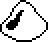 $7C21 | |||
| 168 | 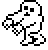 $7813 | a lumbering figure, walking | SKY_WALKER: deadly; walks straight, turns at a bump | falls from the sky (DROP_GRAPHICS, 1 of its 8) |
| 169 | 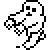 $78AB | the walker's other frames (SKY_WALKER) | ||
| 170 | 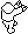 $7943 | a lumbering figure from behind, walking | ||
| 171 | 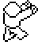 $79F3 |
The well, the bucket it gives, the four stones, the five rune stones and the pentagram's eight pieces (see the quest). Their records live in QUEST_RECORDS between rooms, and they come into a room after it is built (QUEST_INTO_ROOM).
| Graphic | Sprite | What it shows | Update routine | Where it comes from |
|---|---|---|---|---|
| 90 | $9029 | the bucket | BUCKET: put down in a quest item's room, flies to it | the bucket, which the well makes (WELL) |
| 112 | $8D55 | a rough stone | QUEST_ITEM: is finished when the bucket reaches it | quest record 0 in QUEST_START, quest item |
| 113 | quest record 1 in QUEST_START, quest item | |||
| 114 | quest record 2 in QUEST_START, quest item | |||
| 115 | quest record 3 in QUEST_START, quest item | |||
| 116 | $8E8F | a finished pillar | a quest item once the bucket reaches it: its graphic plus 4 (QUEST_ITEM) | |
| 117 | ||||
| 118 | ||||
| 119 | ||||
| 120 | $8C13 | the well | WELL: gives the bucket after 32 turns of being shot | object template 19 (3 rooms) |
| 128 | $6F2F | a piece of the pentagram | PENTAGRAM_PIECE: lies still | quest record 9 in QUEST_START, piece of the pentagram |
| 129 | $6FC1 | quest record 10 in QUEST_START, piece of the pentagram | ||
| 130 | $7053 | quest record 11 in QUEST_START, piece of the pentagram | ||
| 131 | $70E5 | quest record 12 in QUEST_START, piece of the pentagram | ||
| 132 | $7177 | quest record 13 in QUEST_START, piece of the pentagram | ||
| 133 | $7209 | quest record 14 in QUEST_START, piece of the pentagram | ||
| 134 | $729B | quest record 15 in QUEST_START, piece of the pentagram | ||
| 135 | $732D | quest record 16 in QUEST_START, piece of the pentagram | ||
| 144 | $90BB | a rune stone | COLLECTABLE: can be carried; in room 82 glides to its place | quest record 8 in QUEST_START, collectable |
| 145 | $914D | quest record 7 in QUEST_START, collectable | ||
| 146 | $91DF | quest record 6 in QUEST_START, collectable | ||
| 147 | $9271 | quest record 5 in QUEST_START, collectable | ||
| 148 | $9303 | quest record 4 in QUEST_START, collectable | ||
| 152 | $90BB | JUMP_L16_D8: sets its drawing nudge | a collectable once it is in its place: its graphic plus 8 (COLLECTABLE) | |
| 153 | $914D | |||
| 154 | $91DF | |||
| 155 | $9271 | |||
| 156 | $9303 |
Drawn by the panel and the text screens, never in a room: the scroll-work at the foot of the screen (DISPLAY_PANEL), the lives icon (DRAW_LIVES), and the border round the menu and the end screens (PRINT_BORDER).
| Graphic | Sprite | What it shows | Update routine | Where it comes from |
|---|---|---|---|---|
| 2 | $9A4B | a side of the text screens' border | NOTHING: nothing | the text screens' border (BORDER_DATA) |
| 3 | $9ADD | the short piece closing the border's top and bottom | ||
| 4 | $9B3F | a length of the border's top and bottom | ||
| 5 | $9BD1 | a corner of the border | ||
| 22 | $8877 | a little Sabreman | the lives icon on the panel (DRAW_LIVES) | |
| 58 | $89A7 | a piece of the panel's scroll-work | the panel's scroll-work (PANEL_DATA) | |
| 59 | $89E9 | |||
| 60 | $8A59 | BOLT: flies, shoots down flyers, puffs when stopped | ||
| 61 | NOTHING: nothing | |||
| 62 | $8A9B |
No room, template, table or routine gives an object one of these, so the game never shows them. Most name the empty sprite; a few name a real one and have a routine that would run it.
| Graphic | Sprite | What it shows | Update routine | Where it comes from |
|---|---|---|---|---|
| 18 | $98A5 | his legs | NOTHING: nothing | nothing places it |
| 19 | $9901 | his legs, the other view | ||
| 20 | $98A5 | his legs | ||
| 21 | $9849 | |||
| 24 | $9395 | nothing: width and height zero | ||
| 25 | ||||
| 26 | ||||
| 27 | ||||
| 29 | $9849 | his legs | ||
| 31 | $86EB | a toothed trap | ||
| 77 | $9E51 | a tree stump | JUMP_L16_D12: sets its drawing nudge | |
| 83 | $9395 | nothing: width and height zero | NOTHING: nothing | |
| 94 | ||||
| 95 | ||||
| 96 | ||||
| 97 | ||||
| 98 | ||||
| 99 | ||||
| 100 | ||||
| 101 | ||||
| 102 | ||||
| 103 | ||||
| 104 | ||||
| 105 | ||||
| 106 | ||||
| 107 | ||||
| 108 | ||||
| 109 | ||||
| 110 | ||||
| 111 | ||||
| 121 | $88BD | a stone block | PENTAGRAM_PIECE: lies still | |
| 122 | ||||
| 123 | ||||
| 124 | ||||
| 125 | ||||
| 126 | ||||
| 127 | ||||
| 157 | $9395 | nothing: width and height zero | JUMP_L16_D8: sets its drawing nudge | |
| 158 | ||||
| 159 |